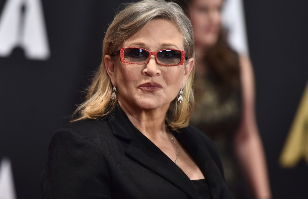
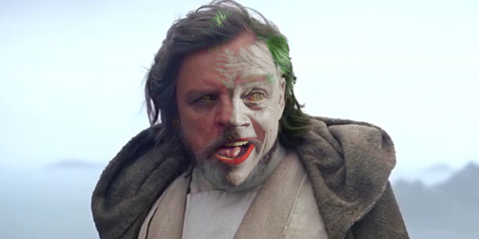
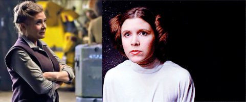
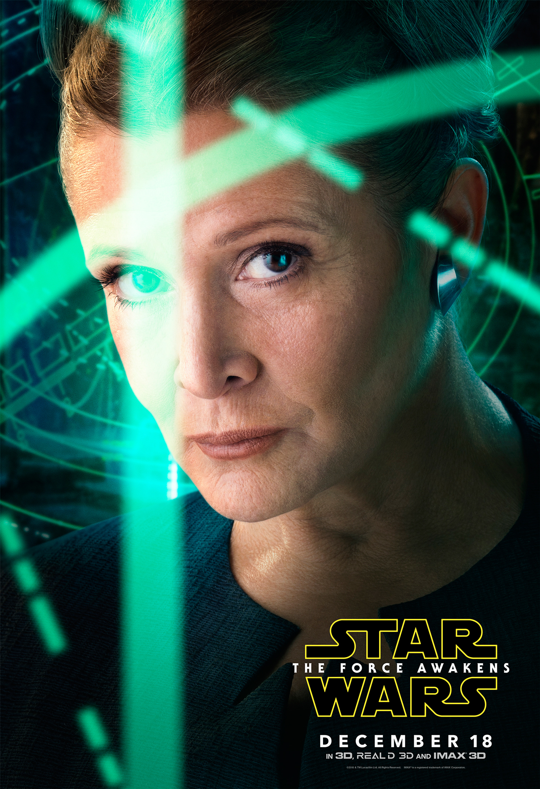

Confession: I’m an odd person to be writing about Carrie Fisher. Consider that Wes Craven passed away three months ago and I have remained oddly silent on that front. Craven’s work is personal to me. It has, on more than one occasion, changed the direction on my life. His passing is still something I can’t quite process, let alone speak about publicly.
I haven’t seen the original Star Wars trilogy since I was 5. My feelings on that particular series of films can pretty much be summed up as “Yeah… Sure.” I’ve joked more than once that my favorite part of “The Force Awakens” was “The closing shot when the Joker shows up.”
Rumor is he wanted to be Two-Face
Carrie Fisher, and I intend no disrespect by this, did not change my life- though I have no doubt she changed the lives of many. Forget about her impressive resume for a moment. Fisher’s true hero moment came when she made the decision to not only accept her battle with mental illness, but speak about it publicly. In 1987 .
That’s not why I found myself writing nearly a thousand words- mostly via smartphone- about Carrie Fisher. The real reason is simple: Fisher, you were damn good at what you did. Despite my (non)humorous reaction to “The Force Awakens” the truth is that Carrie Fisher was far and away the best part of that film.
“The Force Awakens” gives Fisher a role that seems almost tailor made to incite nerd rage. She has to play a character that was miles away from the previous incarnation and yet still make it believable that this person was, once upon a time, the Princess Leia we once knew.

I completely bought Fisher as a hard nosed General, but more impressively I believed that this was the natural path that she, as a princess, would take. Every time general Leia reminds someone “I’m not a princess” Carrie displays remarkable insight into her character.
There are lots of ways that line could have been delivered. It could have been angry, a conduit to the bitterness of the past. It could have been politically smug, a figurehead trying desperately to be “one of the people” but not quite able to pull it off. It could been delivered as annoyed, a General who demands the correct title she feels she earned.
Instead, Fisher delivers the line with a matter of fact subtlety. It just so happens the “Kingdom” no longer exists and she’s okay with that, and “you” can be okay with that too. She adds just a hint a gentleness in the lines. No, you won’t get reprimanded for calling her a princess, she just wants you to know it’s okay to not think of her as such.
This is a masterclass in acting, and it displays the kind of choices that separates a good actor from a great one. This line could have been a throwaway. It could have been a character shortcut. It could have even been silly if put in the hands of an actor that wanted to “make a moment” out of it. Instead, Fisher holds back from these temptations and with four words completely sells her character.
Another fantastic detail about these exchanges - there are scenes in the film where someone does refer to Leia as a princess and she does not correct them.
It’s always with either a character she has a long history with or when more important issues are going on, say a big honkin’ laser battle.
These moments are equally as important. For one, it shows that the General, as one hopes a General would do, is focused on task. There’s a time and place for everything, and right now we have to deal with the guns.
That choice in itself could potentially be contributed to the writer or maybe even the director, but again Fisher makes a very smart decision in how she reacts to these moments.
She doesn’t.
This could have been another area for a character “shortcut” with a lesser actor. Fisher could have made a disgusted face, or a frown. She doesn’t. She doesn’t do anything, because, you know, she’s focused on the damn weapons.
Had these scenes played another way, the General’s insistence may have felt like a personality tick, a psychological- and less visually compelling- equivalent of Heath Ledger’s eerie lick smacking in the Dark Knight.
Instead, they subtly enforce that this former princess is the leader, not the monarch, of the people.
This General is staying on task, thank you very much. She wants you to know you’re equals, but hey, that can wait until the lasers are gone.
Fisher you were brilliant, you were funny, and you lit up the screen. Even for those of us who don’t have 100 Star Wars figures.
